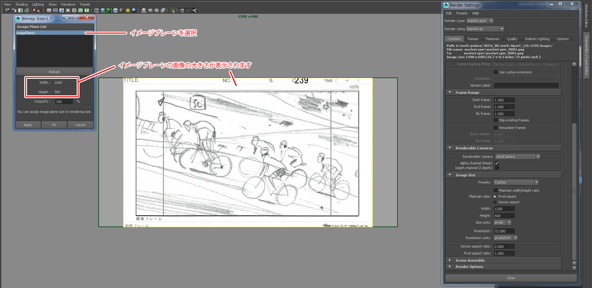
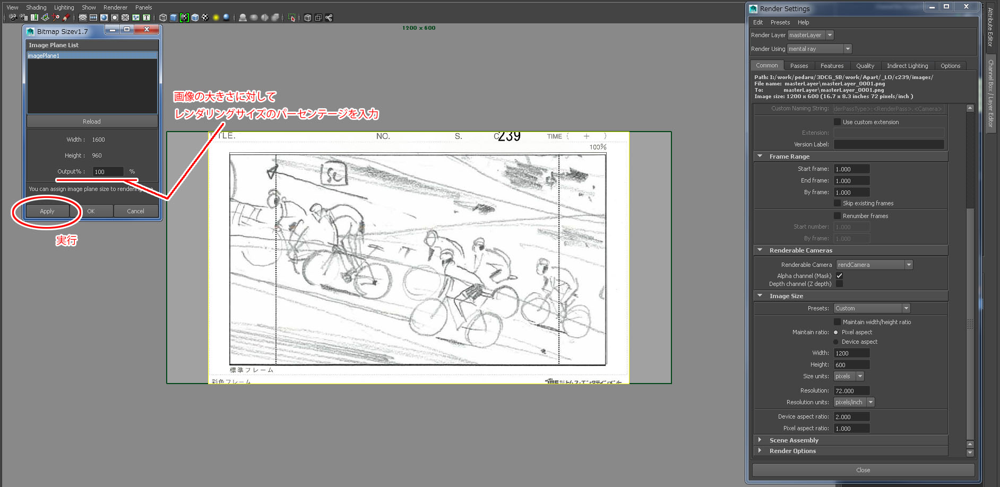
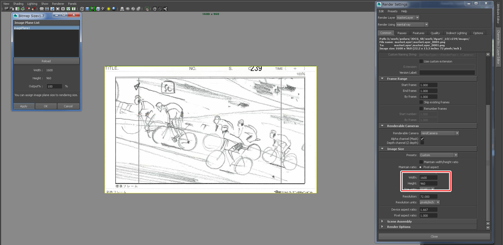
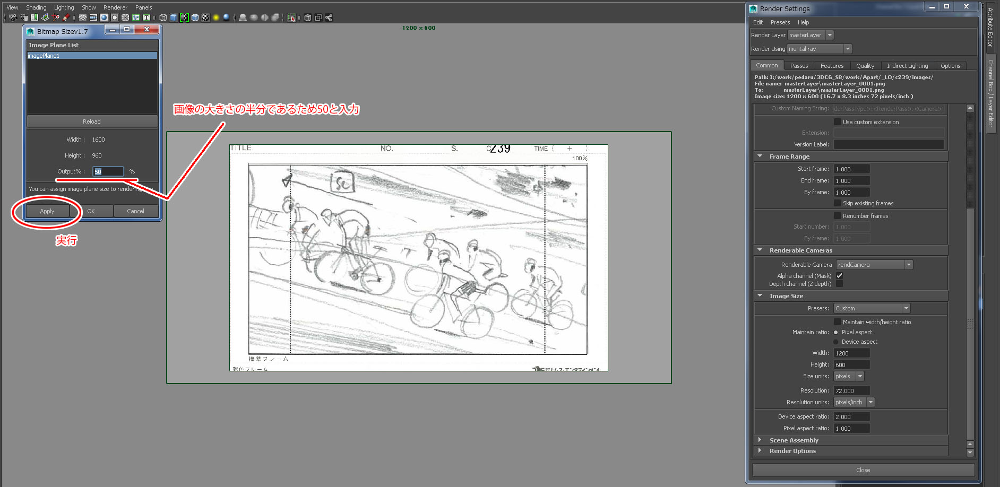
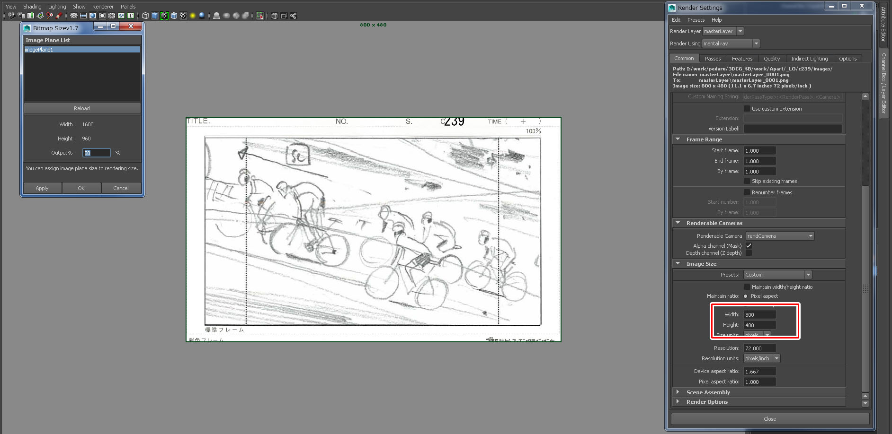

イメージプレーンに画像を読み込んだとき
イメージプレーンの比率とレンダリングサイズの比率のズレが起こります。
これによりビューポートの100％フレームに画像が合わせるために
手動で画像比率に合ったレンダリングサイズをレンダー設定に打ち込む必要があります。
本ツールはイメージプレーンを選択することで自動的にレンダリングサイズを入力することを可能にします。
レンダリングサイズの基準となる画像を読み込んだイメージプレーンノードをリストから選択
選択しますとウインドウ下部の【Width】【Height】に画像の大きさが表示されます。

イメージプレーンに読み込まれている画像の大きさはレンダリングサイズの比率の基準となります。
画像の大きさに対してレンダリングサイズは何％に値するかを【Output%】に入力します。（ここでは画像と同じと仮定して100と入力）
入力後、【Apply】ボタンをクリック

レンダリングサイズが画像と同じ1600x960となり、ビューポート上の画像が100％フレームに合います。

レンダリングサイズ＝画像の半分サイズとなるのが望ましいとき
【Output%】に50と入力し、実行します。

レンダリングサイズが画像の半分サイズである800x480となります。
比率は画像と一致しているため、ビューポート上の画像は100％フレームに合います。
